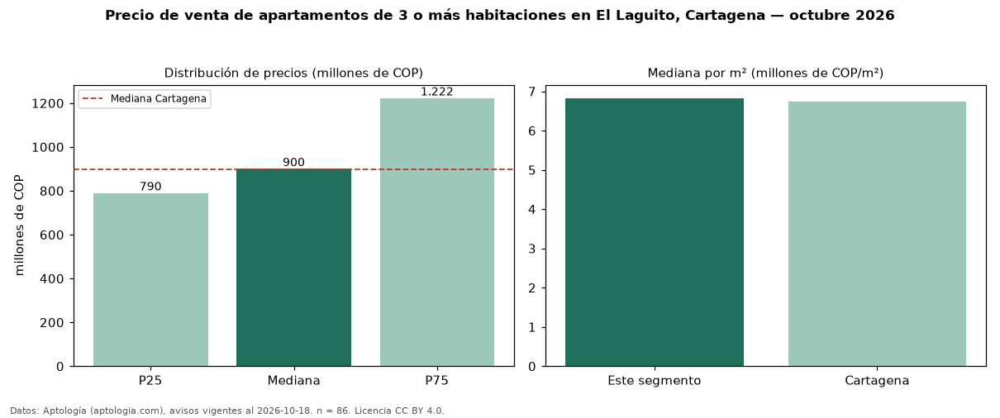

Precio de venta de apartamentos de 3 o más habitaciones en El Laguito, Cartagena — octubre 2026
COP 900 millones es el precio mediano de apartamentos de 3 o más habitaciones en venta en El Laguito, Cartagena (n = 86 avisos). Prácticamente coincide con la mediana de Cartagena para apartamentos de 3 o más habitaciones (COP 898 millones). Por metro cuadrado, la mediana es COP 6,83 millones/m² (n = 84 avisos con área), 1 % por encima de Cartagena (COP 6,74 millones/m²). Son 32 % de los 269 avisos de apartamentos en venta de la zona, cuya mediana general es COP 750 millones (+20 %). El área mediana anunciada es 126 m². La administración mediana declarada es COP 1,00 millones al mes (n = 70). El estrato más frecuente es 6 (69 % de los avisos con estrato). 84 % de los avisos con el dato declara parqueadero o cochera. Datos: Aptología (aptologia.com), CC BY 4.0 — https://www.aptologia.com/venta/cartagena/el-laguito. Archivos: PDF, CSV con las cifras y gráfica PNG.

| Avisos únicos | 86 |
|---|---|
| Percentil 25 | COP 789.925.000 |
| Mediana | COP 900.000.000 |
| Percentil 75 | COP 1.222.500.000 |
| Mediana por m² | COP 6.825.757 |
Fuente: avisos vigentes de portales inmobiliarios recopilados por Aptología, deduplicados (mínimo 30 avisos únicos por celda). Precios pedidos, no cerrados. Fecha: 2026-10-18.